In Peer-reviewed Journals
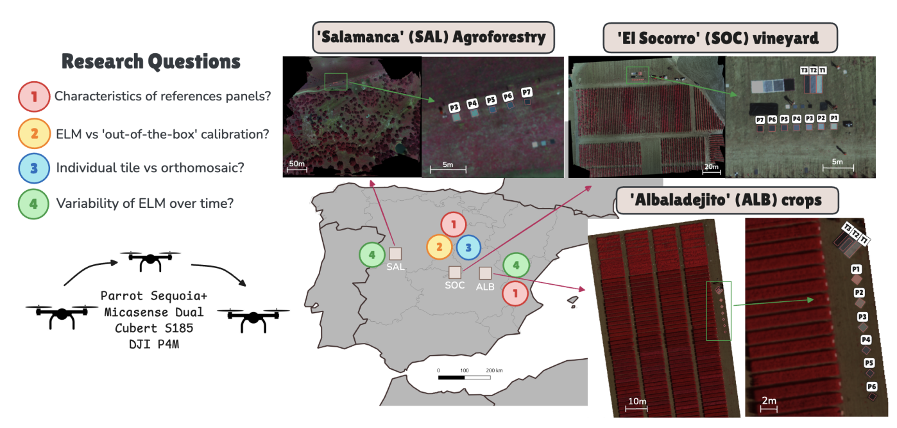
Radiometry
Radiometric Calibration of Optical Sensors Onboard Unmanned Aerial Vehicles: Insights From Inter-Comparison Field Experiments
IEEE Journal of Selected Topics in Applied Earth Observations and Remote Sensing
Radiometric Calibration of Optical Sensors Onboard Unmanned Aerial Vehicles: Insights From Inter-Comparison Field Experiments
2026 - IEEE J-STARS
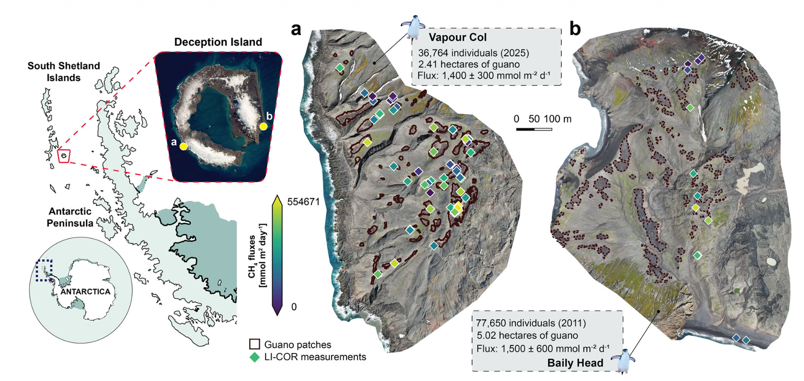
Polar
Methane emissions from penguin colonies reshape the natural greenhouse gas budget
npj Climate and Atmospheric Science
Methane emissions from penguin colonies reshape the natural greenhouse gas budget
2026 - npj Climate and Atmospheric Science
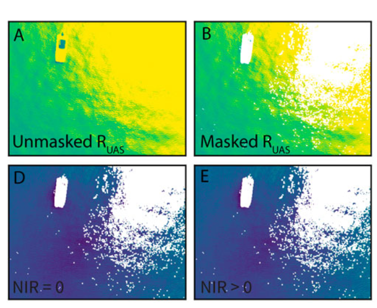
Ocean Color
DroneWQ: A Python package for processing MicaSense multispectral drone imagery for aquatic remote sensing
The Journal of Open Source Software
DroneWQ: A Python package for processing MicaSense multispectral drone imagery for aquatic remote sensing
2026 - The Journal of Open Source Software
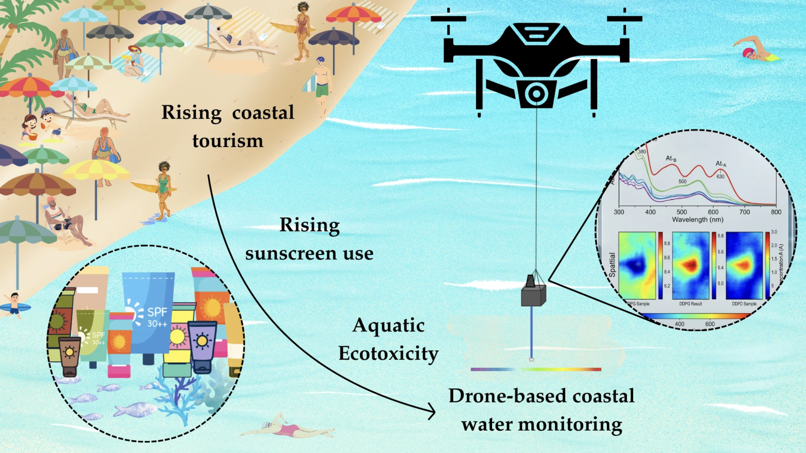
Ocean Color
UAV-Based Above-Water Spectroradiometry for Detecting Sunscreen UV Filters in Coastal Waters
Drones
UAV-Based Above-Water Spectroradiometry for Detecting Sunscreen UV Filters in Coastal Waters
2026 - Drones
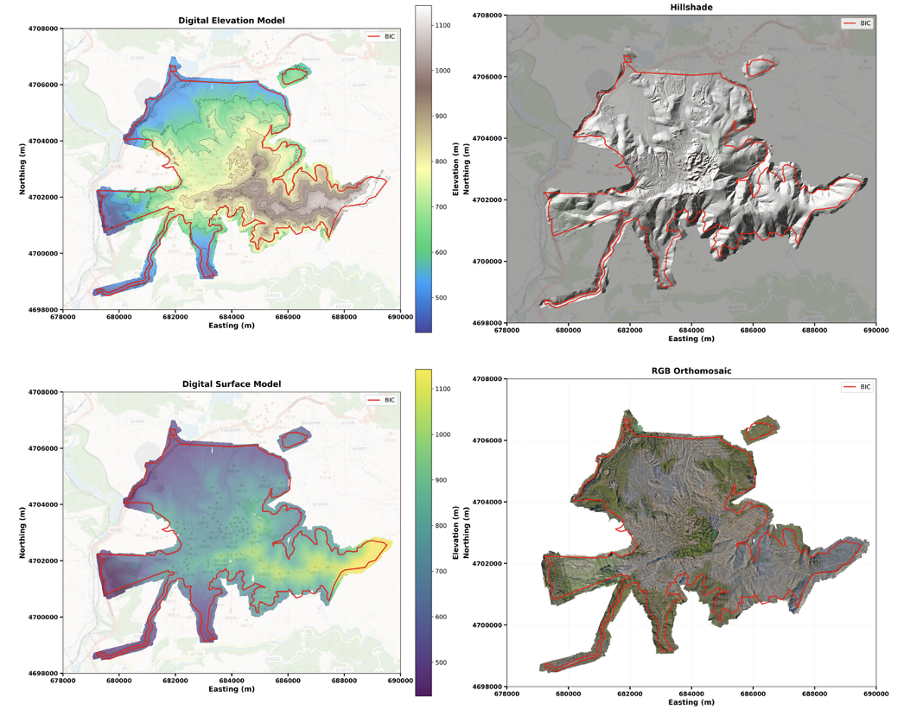
Emergencies
Post-fire lidar dataset and 3D reconstruction of Las Médulas World Heritage Cultural Landscape (NW Spain)
Scientific Data
Post-fire lidar dataset and 3D reconstruction of Las Médulas World Heritage Cultural Landscape (NW Spain)
2026 - Scientific Data
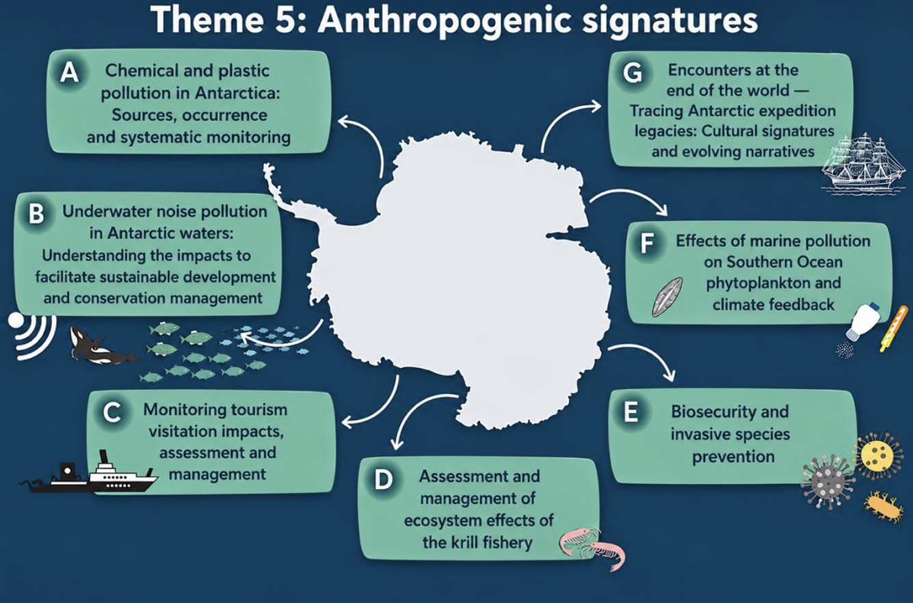
Polar
Antarctica InSync Scientific Theme 5. Anthropogenic signatures in Antarctica: the race against pollution and other pressures
Antarctica InSync
Antarctica InSync Scientific Theme 5. Anthropogenic signatures in Antarctica: the race against pollution and other pressures
2026 - Antarctica InSync
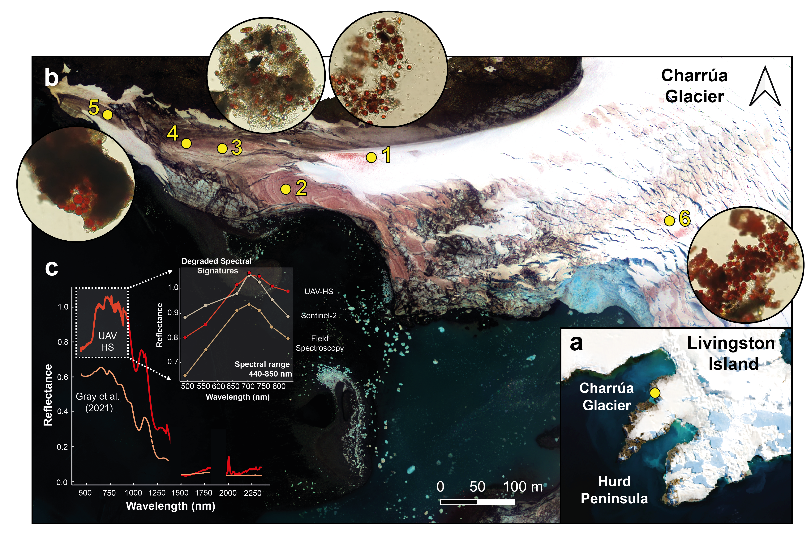
Polar
Unveiling the large coverage of red snow algae blooms in antarctic coastal snowfields
Communications Earth & Environment
Unveiling the large coverage of red snow algae blooms in antarctic coastal snowfields
2026 - Communications Earth & Environment
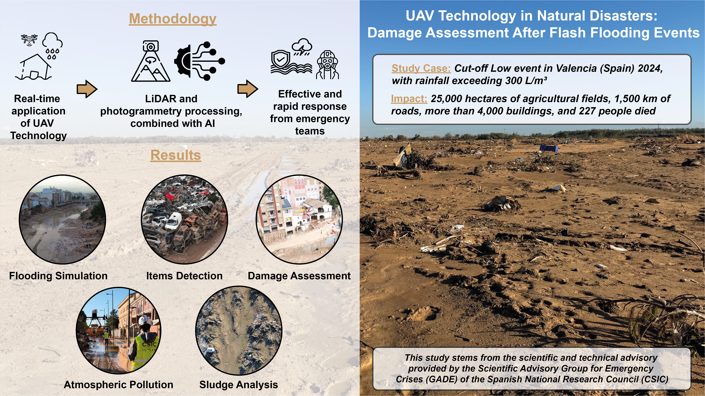
Emergencies
UAV imagery in natural disasters: Real-time damage assessment of flash flooding events
Ecological Informatics
UAV imagery in natural disasters: Real-time damage assessment of flash flooding events
2025 - Ecological Informatics
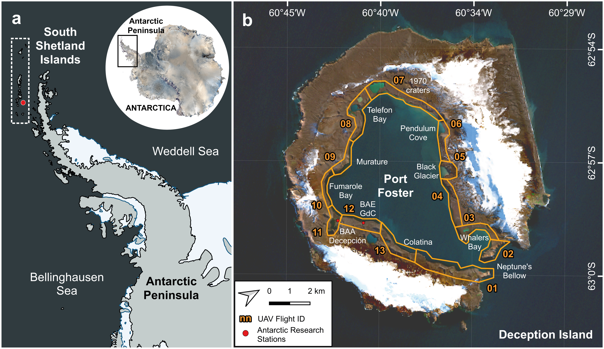
Polar
LiDAR-based topographic data for the coastline of Port Foster (Deception Island, Antarctica)
Scientific Data
LiDAR-based topographic data for the coastline of Port Foster (Deception Island, Antarctica)
2025 - Scientific Data
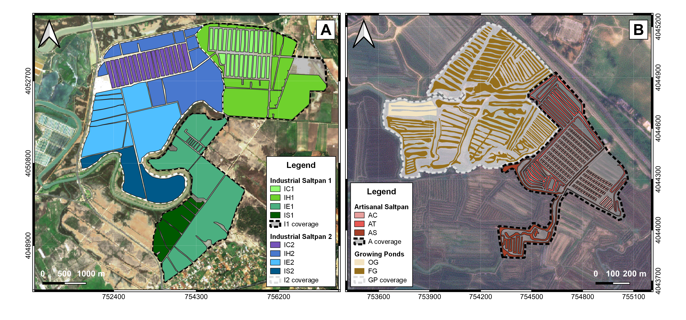
Coastal Ecology
Air-water CO2 exchange in transformed saltmarshes for different uses and under various management models
Journal of Environmental Management
Air-water CO2 exchange in transformed saltmarshes for different uses and under various management models
2025 - Journal of Environmental Management

Coastal Ecology
Mapping intertidal microphytobenthic biomass with very high-resolution remote sensing imagery in an estuarine system
Science of The Total Environment
Mapping intertidal microphytobenthic biomass with very high-resolution remote sensing imagery in an estuarine system
2024 - Science of The Total Environment
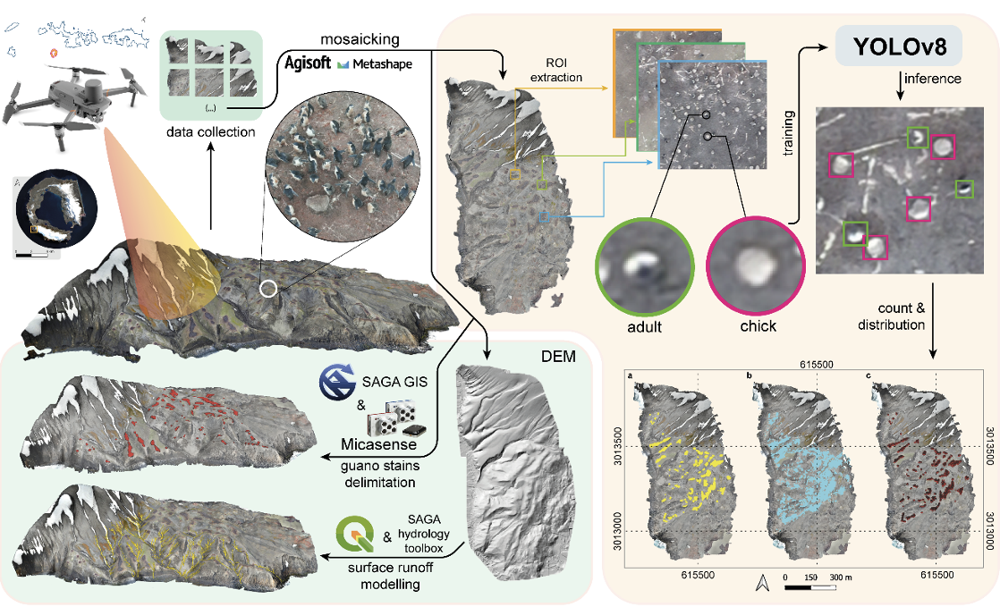
AI
Assessing topographic features and population abundance in an Antarctic penguin colony through UAV-based deep-learning models
International Journal of Applied Earth Observation and Geoinformation
Assessing topographic features and population abundance in an Antarctic penguin colony through UAV-based deep-learning models
2024 - Int. Journal of Applied Earth Observation and Geoinformation
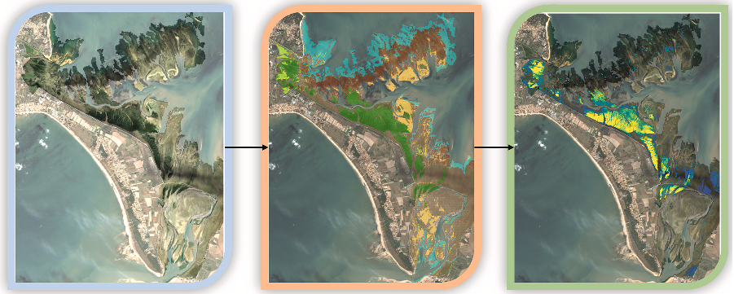
Coastal Ecology
Intertidal seagrass extent from Sentinel-2 time-series show distinct trajectories in Western Europe
Remote Sensing of Environment
Intertidal seagrass extent from Sentinel-2 time-series show distinct trajectories in Western Europe
2024 - Remote Sensing of Environment
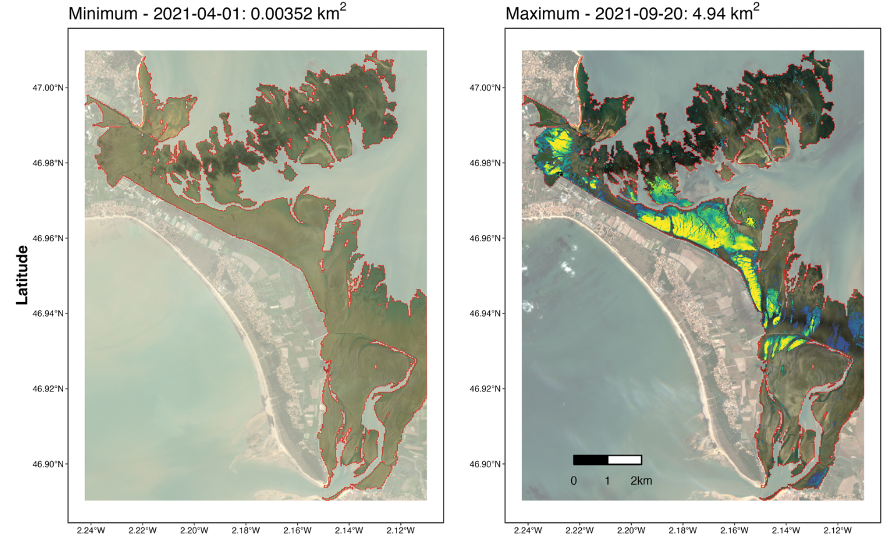
Coastal Ecology
A sentinel watching over inter-tidal seagrass phenology across Western Europe and North Africa
Nature Communications Earth & Environment
A sentinel watching over inter-tidal seagrass phenology across Western Europe and North Africa
2024 - Communications Earth & Environment

Polar
ShetlandsUAVmetry: unmanned aerial vehicle-based photogrammetric dataset for Antarctic environmental research
Scientific Data
ShetlandsUAVmetry: unmanned aerial vehicle-based photogrammetric dataset for Antarctic environmental research
2024 - Scientific Data
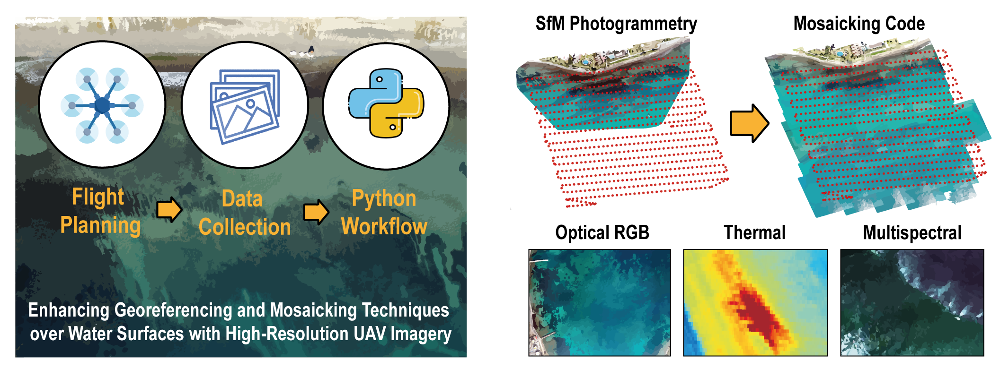
Ocean Color
Enhancing Georeferencing and Mosaicking Techniques over Water Surfaces with High-Resolution Unmanned Aerial Vehicle (UAV) Imagery
Remote Sensing
Enhancing Georeferencing and Mosaicking Techniques over Water Surfaces with High-Resolution Unmanned Aerial Vehicle (UAV) Imagery
2024 - Remote Sensing
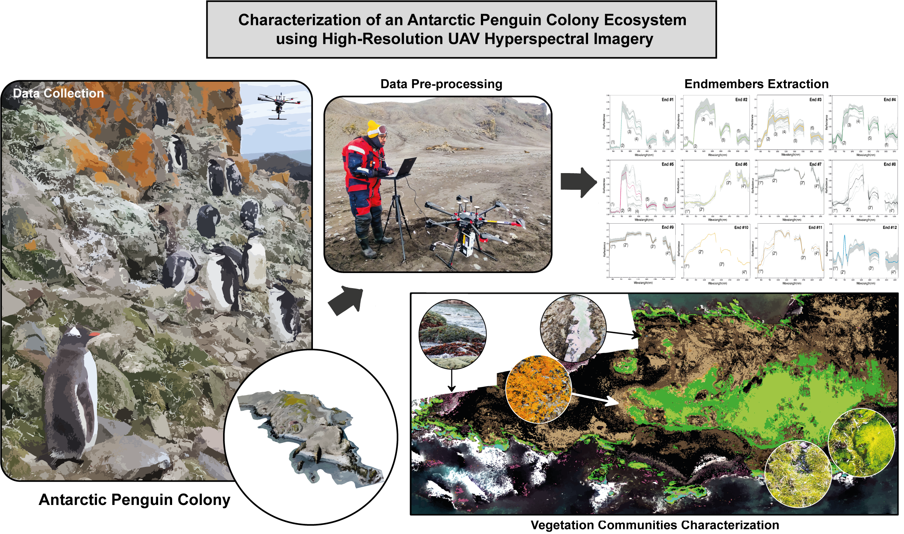
Polar
Characterization of an antarctic penguin colony ecosystem using high-resolution UAV hyperspectral imagery
International Journal of Applied Earth Observation and Geoinformation
Characterization of an antarctic penguin colony ecosystem using high-resolution UAV hyperspectral imagery
2023 - Int. Journal of Applied Earth Observation and Geoinformation
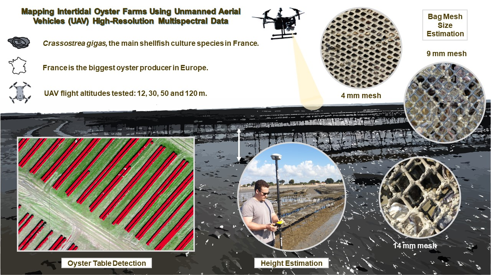
Coastal Ecology
Mapping intertidal oyster farms using unmanned aerial vehicles (UAV) high-resolution multispectral data
Estuarine, Coastal and Shelf Science
Mapping intertidal oyster farms using unmanned aerial vehicles (UAV) high-resolution multispectral data
2023 - Estuarine, Coastal and Shelf Science
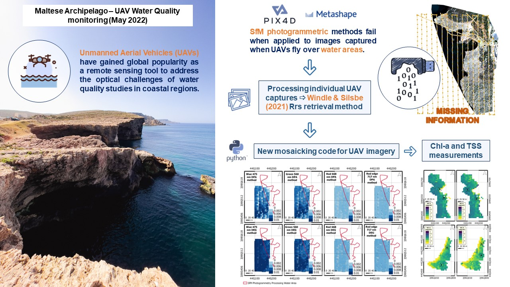
Ocean Color
Water-Quality Monitoring with a UAV-Mounted Multispectral Camera in Coastal Waters
Remote Sensing
Water-Quality Monitoring with a UAV-Mounted Multispectral Camera in Coastal Waters
2023 - Remote Sensing
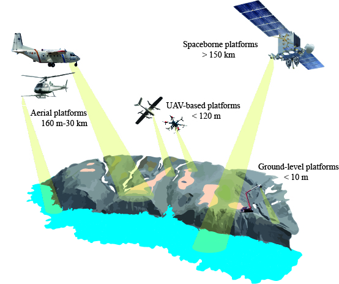
Ocean Color
Remote Sensing: Satellite and RPAS (Remotely Piloted Aircraft System)
Springer
Remote Sensing: Satellite and RPAS (Remotely Piloted Aircraft System)
2022 - Springer
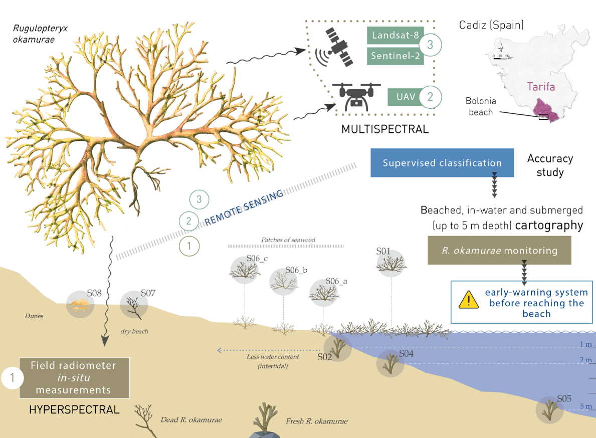
Coastal Ecology
Monitoring the marine invasive alien species Rugulopteryx okamurae using unmanned aerial vehicles and satellites
Frontiers in Marine Science
Monitoring the marine invasive alien species Rugulopteryx okamurae using unmanned aerial vehicles and satellites
2022 - Frontiers in Marine Science
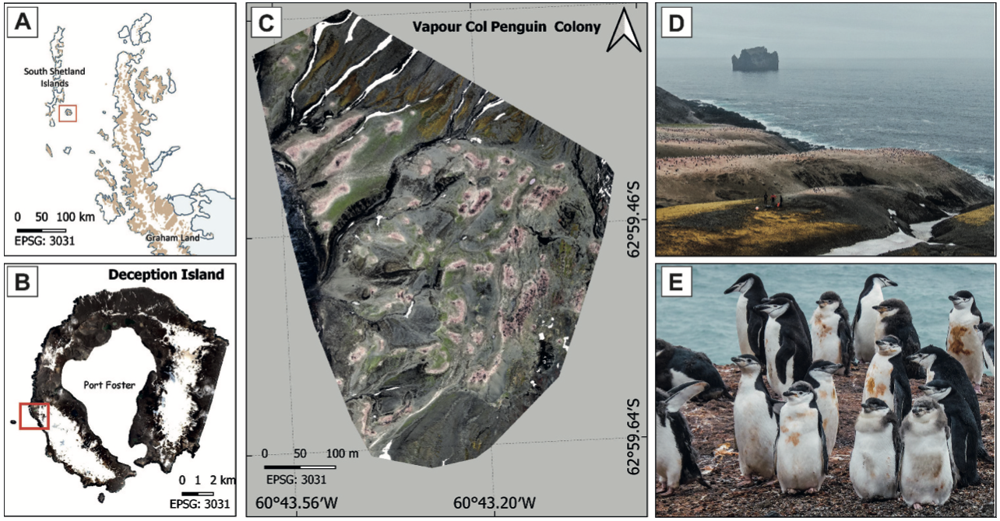
Polar
High-spatial resolution UAV multispectral data complementing satellite imagery to characterize a chinstrap penguin colony ecosystem on deception island (Antarctica)
GIScience & Remote Sensing
High-spatial resolution UAV multispectral data complementing satellite imagery to characterize a chinstrap penguin colony ecosystem on deception island (Antarctica)
2022 - GIScience & Remote Sensing
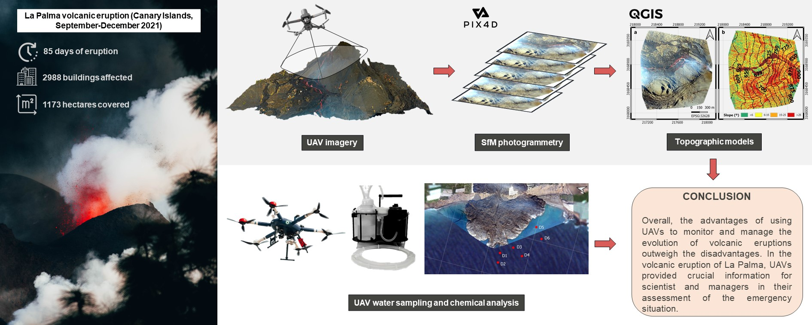
Emergencies
Unmanned aerial vehicles (UAVs) as a tool for hazard assessment: The 2021 eruption of Cumbre Vieja volcano, La Palma Island (Spain)
Science of The Total Environment
Unmanned aerial vehicles (UAVs) as a tool for hazard assessment: The 2021 eruption of Cumbre Vieja volcano, La Palma Island (Spain)
2022 - Science of The Total Environment
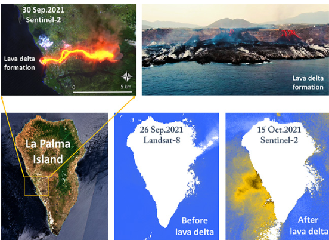
Emergencies
Water quality monitoring with Sentinel-2 and Landsat-8 satellites during the 2021 volcanic eruption in La Palma (Canary Islands)
Science of The Total Environment
Water quality monitoring with Sentinel-2 and Landsat-8 satellites during the 2021 volcanic eruption in La Palma (Canary Islands)
2022 - Science of The Total Environment
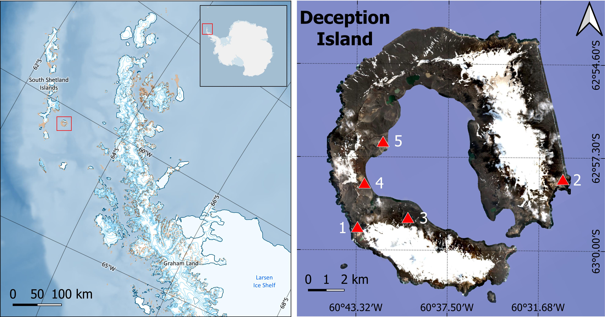
Polar
Applications of unmanned aerial vehicles in Antarctic environmental research
Scientific Reports
Applications of unmanned aerial vehicles in Antarctic environmental research
2021 - Scientific Reports
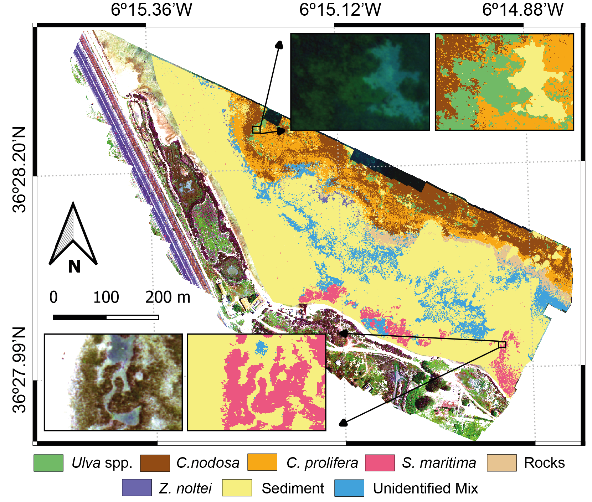
Coastal Ecology
Using a UAV-Mounted Multispectral Camera for the Monitoring of Marine Macrophytes
Frontiers in Marine Science
Using a UAV-Mounted Multispectral Camera for the Monitoring of Marine Macrophytes
2021 - Frontiers in Marine Science
Publication Stats
Citations per Year
Research Impact
Higher than 86% of ResearchGate members
Higher than 99% of researchers who first published in 2021
h-index of 14
Sustained growth since 2021